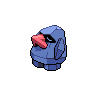

📖 英語版の図鑑説明
Once the people of Hisui discovered that its red nose always points north, they grew to rely on it greatly when traveling afar. The nose seems to work in a similar way to ancient compasses.
日本語訳
ヒスイの人々は、その赤い鼻が常に北を向くことを発見してから、旅の道しるべとして大いに頼りにしました。鼻は古代のコンパスのように機能します。
📝 この図鑑文に出てくる英単語
| 英単語 | 意味 | 品詞 | レベル |
|---|---|---|---|
| discovered | 発見した | 動詞 | 中3 |
| points | 先(複数形) | 名詞 | 中2 |
| rely | 頼る | 動詞 | 高校 |
| greatly | 大いに | 副詞 | 高校 |
| afar | 遠くに | 副詞 | 大学 |
| similar | 似ている | 形容詞 | 高校 |
| ancient | 古代の | 形容詞 | 高校 |
| compasses | 方位磁針(複数形) | 名詞 | 高校 |
文法ポイント seems to work は「seem/appear to + 動詞」で「〜するように見える、〜らしい」という意味です。
when 〜 は「〜するとき」という意味の接続詞。when のまとまりが、もう一方の文がいつ起こるかを表しています。
💡 英語名「Nosepass」の由来
英語名「Nosepass」は、nose（鼻）、north（「北」のなまり）とcompass（方位磁針）を組み合わせた名前と考えられている。フランス語の名前は「Tarinor」で、tarin（「鼻」のくだけた言い方）、nord（北）から作られている。
出典 Bulbapedia
✨ ノズパスの豆知識
英語版の「Nosepass」は、後ろの「pass」の中に下品な言葉「ass」が入っているため、DS時代のGTSではニックネームを付けないと預けられなかった。進化したダイノーズ（Probopass）も同じ目にあっている。
出典 Bulbapedia
📊 ノズパスの種族値
HP30
こうげき45
ぼうぎょ135
とくこう45
とくぼう90
すばやさ30
合計 375
❓ よくある質問
- ノズパスの英語名は？
- ノズパスの英語名は「Nosepass」です。
- ノズパスの英語名「Nosepass」の由来は？
- 英語名「Nosepass」は、nose（鼻）、north（「北」のなまり）とcompass（方位磁針）を組み合わせた名前と考えられている。フランス語の名前は「Tarinor」で、tarin（「鼻」のくだけた言い方）、nord（北）から作られている。
- ノズパスは英語版の図鑑でどう説明されている？
- 「Once the people of Hisui discovered that its red nose always points north, they grew to rely on it greatly when traveling afar. The nose seems to work in a similar way to ancient compasses.」と書かれています。日本語にすると「ヒスイの人々は、その赤い鼻が常に北を向くことを発見してから、旅の道しるべとして大いに頼りにしました。鼻は古代のコンパスのように機能します。」という意味です。
ノズパスは第3世代（ホウエン地方）のポケモンです。第3世代（ホウエン地方）の英語名一覧 →